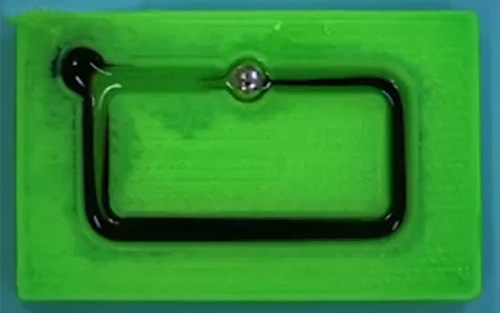
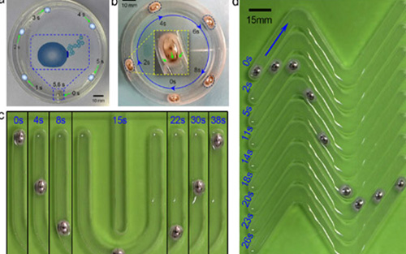

液态金属机器
产品特色
液态金属机器一系列非同寻常的习性已相当接近一些自然界简单的软体生物，比如：能“吃”食物（燃料），自主运动，可变形，具备一定代谢功能（化学反应），因此作者们将其命名为液态金属软体动物。
即液态金属可在吞食少量物质后以可变形机器形态长时间高速运动，实现了无需外部电力的自主运动，从而为研制实用化智能马达、血管机器人、流体泵送系统、柔性执行器乃至更为复杂的液态金属机器人奠定了理论和技术基础。
“液态金属机器” 意味着什么？
完全摆脱了庞杂的外部电力系统，置于电解液中的镓基液态合金可通过“摄入”铝作为食物或燃料提供能量，实现高速、高效的长时运转，一小片铝即可驱动直径约5 mm的液态金属球实现长达1个多小时的持续运动，速度高达5cm/s。
液态金属机器 — 展示


